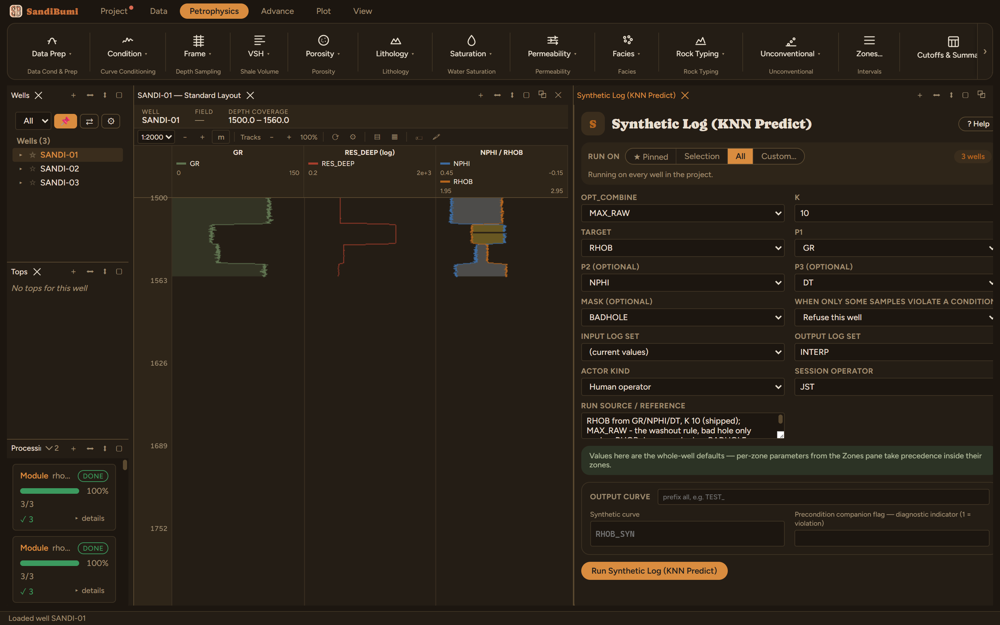
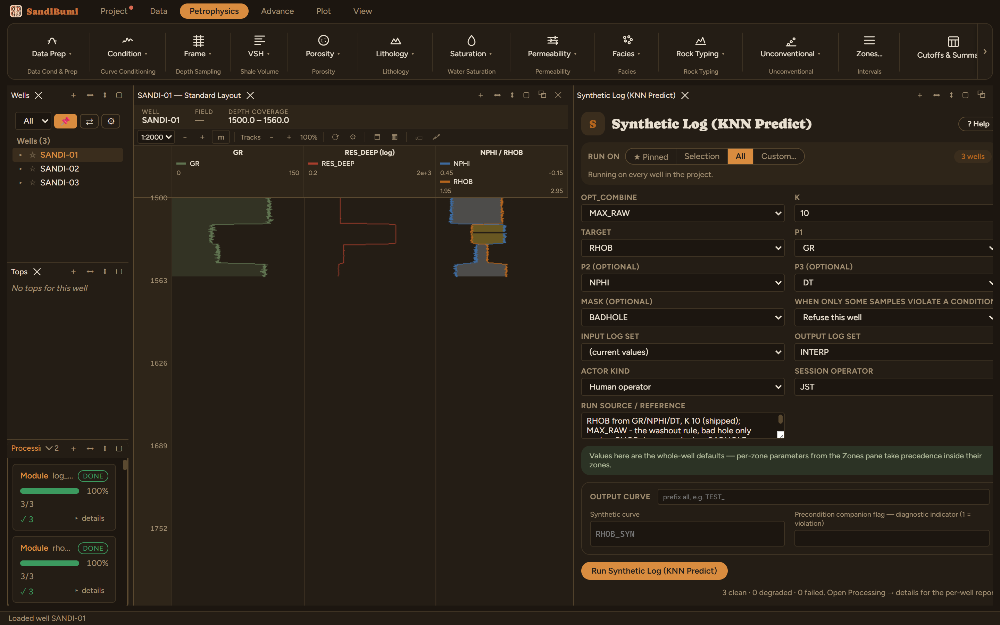

Synthetic Log predicts one curve from others by K-nearest-neighbour regression, per well, and writes the prediction as <TARGET>_SYN. The classic use, and this walkthrough's, is a density log ruined in washouts: train RHOB against GR, NPHI and DT in good hole, predict it everywhere, and combine so that only the damaged intervals take the synthetic value. It also covers the plain missing-curve case, filling a log a well never recorded from the wells' shared statistics.
No physics model at all, and that is the point to understand: KNN is a statistical lookup. Every training sample is a point in predictor space (the predictors are z-scored so a gAPI axis and a us/ft axis weigh equally); to predict at a new depth, the K nearest training points vote, weighted by distance. The method is honest exactly where the training data covers the question, and silently wrong outside it: a rock type that never appears in the training set is predicted as whatever it most resembles. It is also fully deterministic. There is no seed to set and re-running reproduces the same curve to the sample; if you have seen seeds on machine-learning panes, those belong to the clustering methods (the Electrofacies chapter), not to KNN.

3 clean. Under MAX_RAW, 572 samples came out above the measured density, and splitting them against the BADHOLE flag is the honest read: 299 sit in flagged hole, where the repairs run up to +0.068 g/cc, and 273 sit in good hole, where the rule is trimming model scatter (median +0.005, at most +0.043 g/cc). MAX_RAW applies everywhere the reading is lighter than the model expects, not only where the flag is set; the flag kept those samples out of training, and the combine rule then acts on the whole well. Median RHOB_SYN is 2.447 g/cc. Verify the split in the Database Inspector:
SELECT b.value AS flagged, COUNT(*), MAX(g.value - s.rhob) FROM computed_curves g JOIN standard_curves s ON g.well_id = s.well_id AND g.depth = s.depth JOIN computed_curves b ON b.well_id = g.well_id AND b.depth = g.depth AND b.curve_name = 'BADHOLE' WHERE g.curve_name = 'RHOB_SYN' AND g.value - s.rhob > 1e-6 GROUP BY b.value
